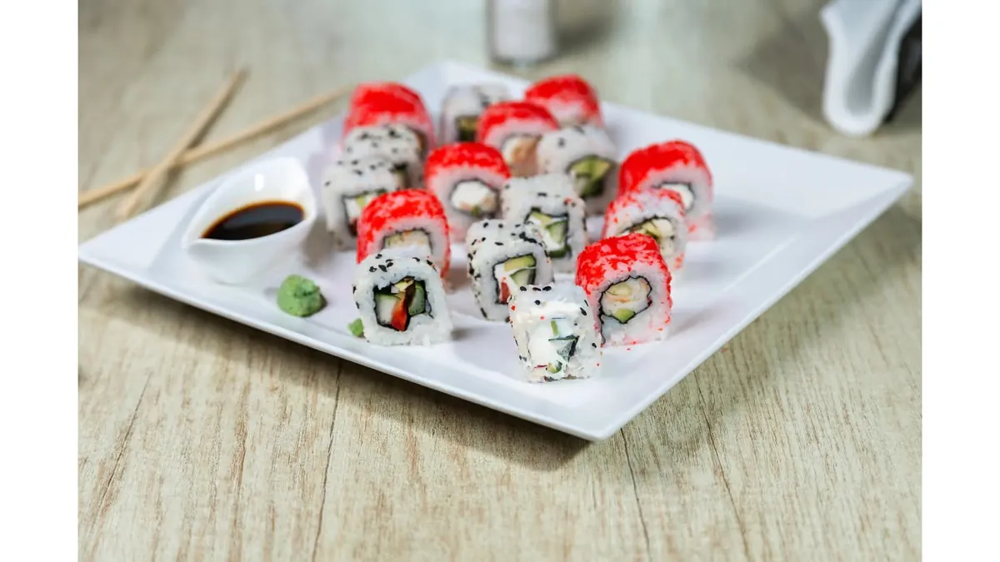

California roll, tempura, maki sau un platou mare pentru toată gașca — la Wok and Noodles pregătim sushi zilnic, în centrul Galațiului. Mai jos găsești toate rulourile și platourile cu prețuri, plus cum comanzi cu livrare.

Rulourile noastre de sushi
Toate rulourile vin cu wasabi și sos de soia. Dacă e prima dată, începe cu California Roll sau Chicken Roll — fără pește crud, gusturi familiare.
Platouri de sushi, pentru împărțit
| Platou | Ce conține | Preț |
|---|---|---|
| Platou Samurai · 500g | Pui, somon, crabsticks, avocado, mango, brânză, legume | 85 lei |
| Platou Tokyo · 500g | Calamar, ton, crabsticks, creveți, avocado, mango, brânză | 85 lei |
| Platou Sushi Mix · 400g | Crabsticks, icre, creveți, avocado, mango, brânză, susan | 75 lei |
Ca reper: un platou de 500g ajunge pentru 2 persoane ca masă principală sau pentru 3–4 ca aperitiv, lângă câteva boluri de tăiței.
Livrare sushi în Galați
Sushi-ul e ideal pentru livrare: se servește rece, deci ajunge acasă exact cum iese din bucătărie. Comanzi zilnic, între 11:00 și 23:00:
- pe Glovo
- pe Wolt
- telefonic, la 0770 803 320 — mai ales pentru comenzi mari
Mai multe sfaturi în ghidul nostru de livrare.
Prima dată la sushi?
Sushi nu înseamnă neapărat pește crud: cuvântul se referă la orezul condimentat cu oțet. Multe dintre rulourile noastre sunt prăjite (tempura), cu pui sau doar cu legume. Tot ce trebuie să știi — cum se mănâncă, cum folosești wasabi și ghimbirul — e în ghidul nostru pentru începători.
Mănânci vegetarian? Ai Veggi Roll, President Sushi și maki cu avocado sau brânză. Detalii în ghidul vegetarian și fără gluten.
Întrebări frecvente
Unde mănânc sushi în Galați?
La Wok and Noodles, pe Strada Regimentul 11 Siret 50A, vizavi de Palatul de Justiție. Avem 14 tipuri de rulouri și 3 platouri, zilnic între 11:00 și 23:00.
Cât costă sushi la Wok and Noodles?
Rulourile costă între 30 și 42 lei, iar platourile 75 lei (400g) sau 85 lei (500g).
Livrați sushi în Galați?
Da, prin Glovo și Wolt, sau telefonic la 0770 803 320, zilnic între 11:00 și 23:00.
Aveți sushi fără pește crud?
Da. California Roll, Chicken Roll, rulourile tempura și prăjite, Veggi Roll și maki cu avocado sau brânză nu conțin pește crud.
Ce platou de sushi ajunge pentru 2 persoane?
Un platou de 500g (Samurai sau Tokyo) ajunge pentru 2 persoane ca masă principală.